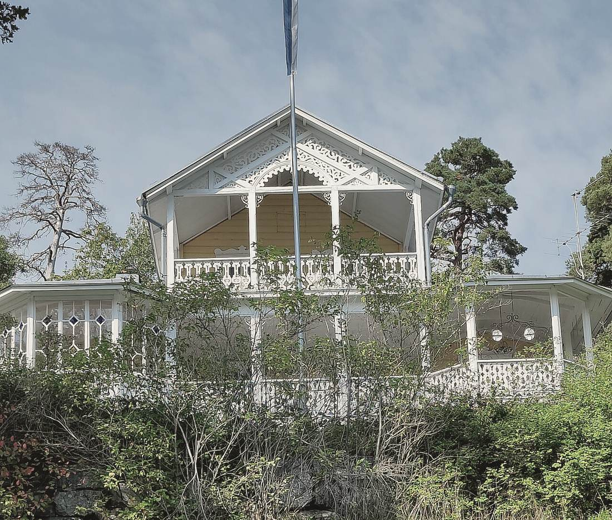
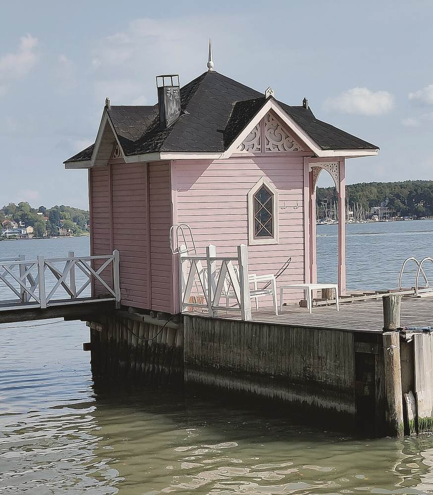

Ruissalo, Turku
Huvila Ruissalo
Kesähuvila 1910-luvulta. Sisustus tehtiin toukokuusta syyskuuhun käytettäväksi, ja julkisivuun ja ikkunoihin ei koskettu.

Lähtökohta
Huvila on rakennettu 1910-luvulla kesäasunnoksi. Talo on talvella kylmä, ja asemakaava suojelee julkisivun ja ikkunat. Omistajat käyttävät sitä toukokuusta syyskuuhun ja pari viikonloppua talvella.
Alakerrassa oli kolme pientä huonetta. Ikkunat antoivat pihan puille, mutta huonekalut oli sijoitettu seinien viereen.
Ratkaisu
Poistimme yhden väliseinän, jolloin ruokailutila avautui puutarhaan päin. Lattialaudat hiottiin ja öljyttiin. Verhot ommeltiin karkeasta pellavasta, koska alkuperäisiin ikkunoihin ei saanut asentaa kaihtimia.
Kalusteista noin puolet on huvilan omia. Vanha nojatuoli verhoiltiin uudelleen, ja lampun röyhelövarjostin jäi, koska se on ollut talossa yli 60 vuotta.
Lämmitys on takka ja ilmalämpöpumppu. Suunnittelu kesti kahdeksan viikkoa, ja työt tehtiin huhtikuusta kesäkuuhun 2024.
Pinnat
- Kalkkimaali, seinät
- Pellava, verhot
- Lattialauta, hiottu ja öljytty


Ruissalosta


Oma kohde
Kerro kohteestasi.
Lähetä osoite, huoneet ja toivottu aikataulu, niin ehdotamme käyntiaikaa kahden arkipäivän kuluessa.
Ota yhteyttä